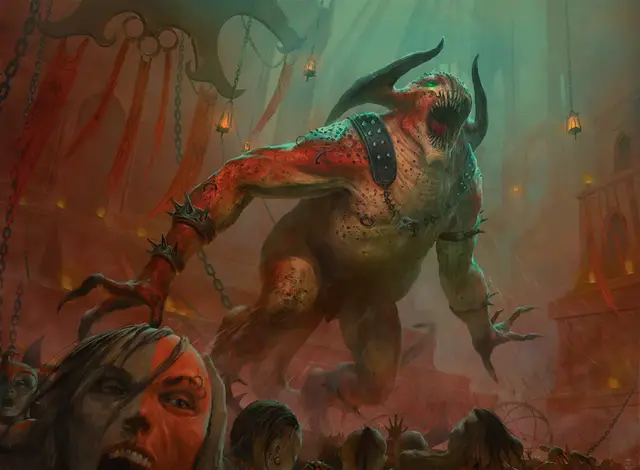

Породитель безумия
Sire of Insanity
Огромное Исчадие (Демон), хаотично-злое

Класс Доспеха 17 (природный доспех)
Хиты 157 (15к12 + 60)
Скорость 40 футов
| мод | спас | ||
|---|---|---|---|
| СИЛ | 23 | +6 | +6 |
| ЛОВ | 6 | −2 | −2 |
| ТЕЛ | 19 | +4 | +8 |
| мод | спас | ||
|---|---|---|---|
| ИНТ | 14 | +2 | +6 |
| МДР | 19 | +4 | +8 |
| ХАР | 22 | +6 | +10 |
Навыки Запугивание +10, Обман +10
Сопротивление урону огонь, холод, электричество; дробящий, колющий, рубящий от немагических атак
Иммунитет к урону яд
Иммунитет к состояниям отравление
Чувства истинное зрение 120 футов, пассивное Восприятие 14
Языки Общий, Бездны, Телепатия 120 фт.
Опасность 12 (8400 опыта)
Бонус мастерства +4
Особенности
Аура эрозии разума. Любое существо, начинающее свой ход в пределах 30 футов от породителя, должно совершить спасбросок Мудрости Сл 18. В случае успеха существо становится невосприимчивым к этой ауре на следующие 24 часа. При провале существо на 1 минуту получает помеху на проверки и спасброски Мудрости и Харизмы.
В начале каждого своего хода породитель может подавить эту ауру до начала своего следующего хода.
Врождённое колдовство. Врождённой базовой характеристикой породителя является Харизма (Сл спасброска от заклинания 18, +10 к попаданию атаками заклинаниями). Породитель может накладывать следующие заклинания, не предоставляя материальных компонентов:
• Неограниченно: подсматривание [clairvoyance], корона безумия [crown of madness], образ [major image], внушение [suggestion]
• 1/день каждое: смятение [confusion], множественное внушение [mass suggestion]
Сопротивление магии. Породитель совершает с преимуществом спасброски от заклинаний и других магических эффектов.
Действия
Мультиатака. Породитель совершает две атаки: одну укусом и одну когтями.
Укус. . Рукопашная атака оружием: +10 к попаданию, досягаемость 5 фт., одно существо. Попадание: 25 (3к12 + 6) колющего урона плюс 16 (3к10) урона психической энергией.
Когти. . Рукопашная атака оружием: + 10 к попаданию, досягаемость 10 фт., одна цель. Попадание: 10 (1к8 + 6) рубящего урона плюс 9 (2к8) урона психической энергией.
Описание
Ночные клубы Ракдосов, где посетители могут предаваться любым тёмным желаниям и упиваться садистскими зрелищами, являются излюбленными местами обитания демонов, известных как породители безумия. Скрываясь в подземном хранилище под управлением Ракдосов, породитель безумия наслаждается насилием, мучениями и развратом, разворачивающимися наверху. Иногда культисты приводят потенциальных рекрутов к демону и, в соответствии со своим именем, породитель безумия ломает разум нового культиста.
Породитель безумия — раздутый демон, напоминающий двуногую ящерицу. Он около тридцати футов в высоту и весит много тысяч фунтов, поэтому он обычно прячется в своём подземном логове, творя зло из тени.